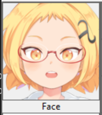
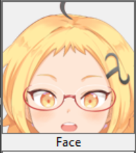
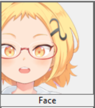
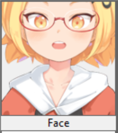

character_image_file_nameThis is the name of the file of an image of a humanoid character. The image must conform to the following specifications.
Once you have chosen the image, a crop of the character face will be shown on the right side of the window. In order for the distillation process works correctly, make sure that all the movable parts of the face— eyes, eyebrows, mouth, jaw line — can all be seen in this crop.
|  ☑ |
This image is GOOD because we can see all of the eyes, eyebrows, mouth, and jaw line in the image. |
|  ☒ |
This image is NOT GOOD because we cannot see the whole of the jaw line in the image |
|  ☒ |
This image is NOT GOOD because we cannot see the whole of the right eye and eyebrow in the image. |
|  ☒ |
This image is NOT GOOD because we cannot see the whole of the eyebrows in the image. |
The data/images directory contains two example images that conform to all the above specifications: data/images/lambda_00.png and data/images/lambda_01.png. Please use them as references.